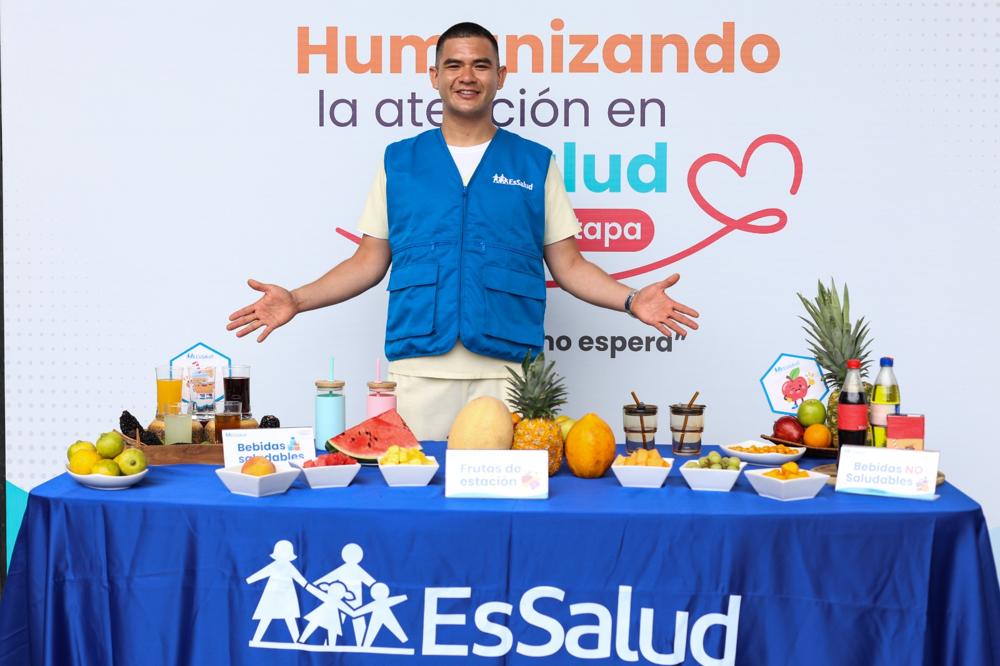
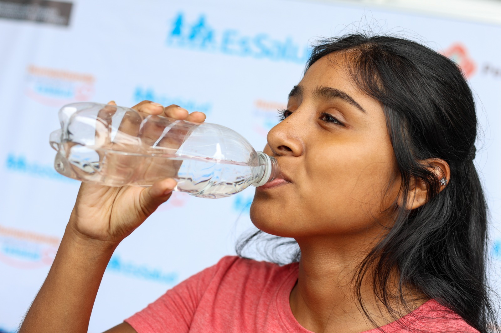
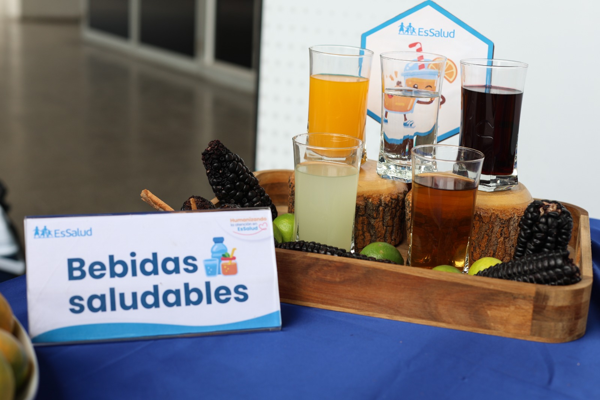

EsSalud advierte que la falta de líquidos puede causar mareos, cansancio y confusión. Conoce las señales de alerta y siete medidas prácticas para hidratarte y prevenir el golpe de calor.

Fuente: Seguro Social de Salud (EsSalud).
El dolor de cabeza, los mareos, el cansancio y la dificultad para concentrarse pueden ser señales de que el cuerpo necesita líquidos. Ante el incremento de las temperaturas, el Seguro Social de Salud (EsSalud) advierte sobre los riesgos de la deshidratación y brinda recomendaciones para prevenir el golpe de calor, una emergencia médica que puede poner en peligro la vida si no se atiende a tiempo.
Durante los días de calor intenso, el organismo pierde más agua a través del sudor para regular su temperatura. Si esos líquidos no se reponen, el rendimiento físico y mental se ve afectado, incluso en actividades cotidianas como trabajar, estudiar o caminar.
El licenciado Edinson Sánchez, nutricionista del Hospital Nacional Alberto Sabogal Sologuren de EsSalud, explicó que mantener una hidratación adecuada es fundamental para el buen funcionamiento del organismo, especialmente cuando hay actividad física o exposición prolongada al calor.
El especialista recomendó consumir entre seis y ocho vasos de agua pura al día, distribuidos en pequeños sorbos desde la mañana. En personas que realizan actividad física o están expuestas al sol, la necesidad de líquidos puede aumentar. Como referencia general, sugirió una ingesta aproximada de dos a dos litros y medio de líquidos al día, siempre considerando la edad, el estado de salud y el nivel de actividad.

El agua es la principal aliada para hidratarse, pero frutas como sandía y melón también ayudan a reponer líquidos.
El agua debe ser la primera opción, pero algunas frutas también contribuyen a reponer líquidos. EsSalud destaca opciones como sandía, melón, fresas, papaya, naranja y mandarina, que además aportan vitaminas y minerales como potasio y magnesio.
También se pueden elegir bebidas sin azúcar añadida, como infusiones, chicha morada, limonada, emoliente o refrescos naturales de frutas. En cambio, se recomienda limitar las gaseosas y bebidas con alto contenido de azúcar, así como evitar el alcohol durante la exposición a temperaturas elevadas, porque puede favorecer la pérdida de líquidos.
La doctora María Salazar, médica emergencista del Servicio de Transporte Asistido de Emergencia (STAE) de EsSalud, advirtió que el golpe de calor ocurre cuando el organismo no logra regular adecuadamente su temperatura. Es una emergencia que requiere atención inmediata.
Ante la sospecha de un golpe de calor, se debe trasladar a la persona a un lugar fresco o con sombra, retirar el exceso de ropa, aplicar agua fresca y favorecer la ventilación. Si hay alteración de conciencia, no se le deben dar líquidos por vía oral por riesgo de atragantamiento.

Buscar sombra, usar ropa ligera y mantenerse hidratado son medidas clave para prevenir el golpe de calor.
Los adultos mayores, niños pequeños, gestantes, personas con enfermedades crónicas y trabajadores expuestos al sol son más vulnerables a las altas temperaturas. Mantener una hidratación adecuada y actuar ante los primeros signos de alerta puede prevenir complicaciones graves.